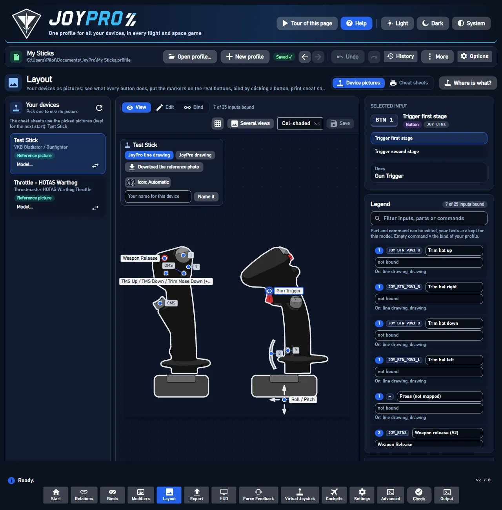

레이아웃 페이지는 각 장치의 이미지와 모든 버튼, 햇, 축이 하는 일을 보여 줍니다. 위쪽에서 전환하는 두 부분이 있습니다: 장치 이미지(한 번에 장치 하나: 보기, 마커 고치기, 이미지에서 바인딩)와 치트 시트(기체별로 모든 장치를 담은 인쇄용 이미지). 이 페이지는 게임을 바꾸지 않습니다. 단, 바인딩 모드에서 만든 바인딩은 다른 바인딩처럼 프로필에 들어갑니다.


초보자용
#무엇이 어디에? (레이아웃 창)
**무엇이 어디에?**는 모든 장치가 담긴 창을 엽니다. 각 조작 장치 옆에 그것이 게임에서 하는 일이 적혀 있습니다. 이 페이지의 오른쪽 위, 시작 페이지, 알림 영역 메뉴에 있습니다.
- 게임과 기체를 고르세요.
- 버튼을 누르거나 축이나 햇을 움직이세요. 그 줄에 불이 들어옵니다. 그 기능이 위쪽에 큰 글자로 나타납니다.
- 비행하는 동안 창을 두 번째 모니터에 띄워 두세요. 다음에도 두었던 자리에 다시 나타납니다.
게임 따라가기는 지금 플레이하는 게임으로, DCS에서는 비행 중인 기체로 바꿉니다. 더 보기: 무엇이 어디에? 각 버튼이 하는 일 보기.


#DCS 니보드의 내 바인딩
JoyPro는 각 DCS 기체의 니보드에 바인딩이 담긴 페이지를 넣을 수 있습니다. 조종석 안에서 바로 읽을 수 있습니다.
- 이 페이지 위쪽의 치트 시트를 누르세요.
- 니보드 부분을 찾으세요. **DCS 니보드 (OpenKneeboard에서도 표시)**를 그대로 두세요.
- 니보드에 넣기를 누르세요.
- DCS를 시작하고 기체에 타서 니보드를 여세요. 페이지가 거기에 있습니다.
버튼을 바꾸었나요? 니보드에 넣기를 다시 누르세요. JoyPro는 자신이 만든 페이지만 바꿉니다. 다른 니보드 페이지는 그대로 남습니다. 더 보기: DCS 니보드에서 내 바인딩 보기.


#장치 이미지
- 왼쪽: 내 장치. 스틱, 스로틀, 페달, 패널마다 카드 하나. 모델과 "내 레이아웃 · 마커 47개" 또는 "참고 이미지"가 나옵니다. 카드를 클릭하면 이미지가 보입니다. **모델...**은 어떤 모델인지 알려 줍니다(JoyPro가 잘못 추측했을 때). 교체 버튼은 바인딩을 다른 장치로 옮깁니다.
- 가운데: 이미지. JoyPro가 그린 장치 도면, 제조사 사진 또는 직접 찍은 사진에, 입력마다 하는 일을 적은 라벨이 붙어 있습니다("Weapon Release", "Gear Up/Down").
- 오른쪽: 선택한 입력(라벨이나 범례의 줄을 클릭)과 범례: 장치의 모든 입력과 그 바인딩, "입력 25개 중 7개 바인딩됨".



#세 가지 모드
- 보기(V): 모든 입력이 하는 일을 봅니다.
- 편집(E): 라벨을 실제 버튼 위로 끌어다 놓고, 직접 찍은 사진을 쓰고, 마커 도우미를 시작합니다.
- 바인딩(B): 입력을 클릭하고, 오른쪽에서 관계를 고르고, 이 입력에 바인딩을 누르세요. 바인딩이 프로필에 들어갑니다.


#치트 시트
모든 바인딩을 버튼 옆에 적은 장치 이미지로, 인쇄하거나 두 번째 화면에 띄워 둘 수 있습니다. 장치, 게임, 기체를 체크하고 장치별 개요 또는 기체당 하나(둘 다도 가능)를 고른 다음 치트 시트 만들기를 누르세요. 이미지(PNG)는 출력 폴더에 저장되고 미리 보기에 나옵니다.


게임에서: 치트 시트와 바인딩 모드
치트 시트는 한 기체에서 버튼이 하는 일을 보여 주며, 미리 보기 상자에서 고르면 그 게임 자체의 명령 이름으로 보여 줍니다. 바인딩 모드에서 만든 바인딩은 바인딩 페이지에서 기록한 바인딩처럼 다음 내보내기 때 게임에 쓰입니다.
고급
#표시되는 이미지
- 직접 지정한 레이아웃 파일(JoyPro 1 레이아웃, 직접 고른 이미지).
- 직접 찍은 장치 사진.
- 제조사의 참고 사진(뷰마다 한 장). 동의한 뒤에만 다운로드합니다.
- JoyPro가 그린 장치 도면.
- 장치 종류의 윤곽(스틱, 스로틀, 페달 ...).
캔버스 위의 이미지 줄에는 장치의 이미지마다 버튼이 하나씩 있습니다. 3D 버튼 옆의 상자에서 도면 스타일을 고릅니다: 선 또는 굵은 윤곽선 아래의 단색 채우기(색은 설정 > 도면에서). 3D 모델이 있는 장치에는 3D 뷰가 있습니다. 끌어서 돌리고, 휠로 확대/축소하며, 더블 클릭하면 초기화됩니다. 치트 시트에 인쇄되고 편집 모드에서 작업하는 것은 평면 도면입니다.
#어떤 모델인가요?
JoyPro는 장치를 USB id, 이름, 장치가 보고하는 입력으로 수백 개 모델의 카탈로그와 비교해 식별합니다. 구별할 수 없을 때(그립을 바꿀 수 있는 베이스, 여러 제품이 같은 USB id를 쓰는 경우, 알 수 없는 장치)는 이미지 위에서 묻습니다: 어느 것인가요? 후보 타일이 나오며 가장 유력이 맨 앞에 있고, 가장 유력한 것 유지, 목록에 없음: 카탈로그 검색, 나중에를 고를 수 있습니다. 알 수 없는 장치는 종류도 고릅니다. **모델... > 다른 모델 선택...**으로 언제든 다시 물을 수 있습니다.
#마커 도우미
표시된 이미지에 부품 위치가 하나도 없으면("이 이미지에는 아직 위치가 없습니다") 마커 도우미가 1분 만에 위치를 정해 줍니다:
- 마커 배치(빠진 것이 몇 개뿐이면 배치하기).
- 장치에서 버튼이나 햇 방향을 누르거나(다른 장치는 무시됨), 더 보기 > 축을 고르고 축을 움직이세요.
- 이미지에서 그 부품의 위치를 클릭하세요.
- 반복합니다. 완료를 누르면 저장됩니다.
장치가 손에 없으면 이제 배치: X가 다음 입력을 알려 줍니다. 클릭하면 그 자리에 놓이고, 나중에는 다른 입력들 뒤에 다시 묻습니다. 위치가 없는 입력은 이미지 위로 끌어다 놓을 수 있는 칩으로 표시됩니다. 실행 취소는 마지막 배치를 되돌리고, 건너뛰기는 다음 입력으로 넘어가며, 중지는 일시 중지합니다. 더 보기에는 축, 중지, 조작부 추가(JoyPro가 모르는 조작부: 버튼, 스위치, 햇, 미니 스틱, 인코더, 축), 이미지에서 제거가 있습니다.


#감지된 지점 (실험적)
**더 보기 > 감지된 지점 (실험적)**은 사진에서 버튼, 햇, 스위치처럼 보이는 지점에 얇은 점선 원을 그립니다. 원 근처를 클릭하거나 칩을 놓으면 마커가 원의 중심에 놓입니다. JoyPro는 그 지점이 어떤 입력인지 모르므로 스스로는 아무것도 배치하지 않습니다. 사진에서만 작동하고 JoyPro의 도면에서는 작동하지 않으며, 오프라인으로 실행됩니다.
#표와 선
위치가 알려진 이미지에서 도구 모음의 표는 JoyPro 1의 치트 시트 모양을 그립니다. 이미지 둘레에 조작부 그룹마다 표가 하나씩 있고, 부품까지 선이 이어지며, 행마다 바인딩된 관계가, 두 번째 열에는 수정키 바인딩이 있습니다. 미리 보기 상자에서 행에 표시할 것을 고릅니다: 관계 이름, 또는 게임과 기체 하나를 골라 그 게임 자체의 메뉴 이름. 편집 모드에서는 표(고정됨으로 바뀜), 표의 오른쪽 가장자리, 선의 구간이나 지점을 끕니다. 옆 패널에는 수정키 열, 행 + / 행 −, 고정됨, 선 다시 연결, 선 제거, 개별 표로 분리, 다시 그룹화, 자동 정렬, 초기화가 있습니다. 관계를 행에 끌어다 놓으세요에서 관계를 끌어 행에 놓으면 그 자리에 바인딩됩니다.


#한 페이지에 여러 뷰
여러 뷰는 한 장치의 이미지 여러 장을 한 페이지에 놓습니다(앞면과 옆면을 놓아 모든 버튼이 보이게): 뷰 추가, 내 이미지..., 정렬, 이 뷰 편집, 뷰 제거, 페이지 제거, 이미지 한 장으로 돌아가기. 페이지 형식은 인쇄용 A4나 Letter, 화면용 16:9 / 21:9 / 32:9입니다. 치트 시트는 이 페이지를 인쇄합니다.
#JoyPro 바로잡기
입력이 빠졌거나 잘못된 위치에 있으면 편집 모드에서 고치세요(끌기, 조작부 추가, 이미지에서 제거, 범례에서 이름 바꾸기). 모든 것은 JoyPro 데이터 위에 덮이는 내 레이어로 이 PC에 보관됩니다. **JoyPro에 수정 사항 보내기...**는 변경 내용을 작은 파일로 저장하고 미리 채워진 GitHub 이슈 양식을 엽니다. 보낼지는 거기서 직접 정합니다. **모델... > JoyPro 기본값으로 초기화...**는 한 장치에 대한 내 변경을 모두 지웁니다(먼저 묻고, 초기화 실행 취소로 되돌릴 수 있음).
#단축키
V / E / B 모드, N 마커 배치(레이아웃 파일), Del 제거, Ctrl+Z / Ctrl+Y 실행 취소와 다시 실행, Ctrl+S 저장, + / - 확대/축소, 0 또는 F 화면에 맞춤, 편집 모드에서 화살표로 미세 이동(Shift: 10 px), Alt를 누르고 끌면 맞춤 없이 이동, 이미지 파일을 끌어다 놓으면 그 장치의 내 사진이 됩니다.
기술 정보
#페이지의 내부
flowchart TD D["장치<br/>(USB id, 이름, 입력)"] --> I["DeviceIdentifier<br/>+ 장치 카탈로그"] I --> R["장치 참조:<br/>모델, 부품, 이미지"] R --> C["DeviceMarkerCanvas<br/>(보기 / 편집 / 바인딩)"] P["프로필 바인딩<br/>(binds list)"] --> C C --> B["binds set"] R --> S["콜아웃 시트:<br/>표와 선"] S --> L["layout render:<br/>장치와 기체마다<br/>PNG 하나"] S --> K["layout kneeboard:<br/>DCS Kneeboard 또는<br/>OpenKneeboard"]
- 뷰 모델:
MainWindowViewModel.LayoutWorkspace.cs(모드, 실행 취소, 바인딩과 해제),LayoutReference.cs(참조 이미지, 저장, 도우미 호스트),LayoutCallouts.cs(표와 선),MultiView.cs,CheatSheets.cs,ReferencePhotos.cs,Device3D.cs,DeviceIcons.cs,ModelChoice.cs,LayoutReset.cs,UnmappedPress.cs;DeviceReferenceViewModel*.cs,MarkerAssistantViewModel.cs,SheetStyleViewModel.cs. 캔버스:Views/Controls/DeviceMarkerCanvas.cs,CalloutSheetCanvas.cs,MultiViewCanvas.cs. - 이 PC(
<data>\DeviceReference):grips.json(모델 선택 답),Layouts\(이미지별 내 위치),Callouts\(표와 선),MultiView\,ReferencePhotos\<model>\(SHA-256으로 검사),Corrections\,ResetBackups\. 내 장치 정의는<data>\Devices에 있습니다. 전체 시트 스타일은sheet-style.json에 있습니다. - 엔진:
engine layout suggest(장치마다 이미지 찾기, 직접 고른 이미지 위의 레이아웃),engine layout render(치트 시트),engine layout image(프로필이 쓰는 레이아웃 파일),engine layout template-inspect/engine layout template-save(레이아웃 파일 편집기),engine layout callouts,engine layout multiview,engine layout titles(게임 메뉴 이름),engine hud devices(연결된 장치의 모델),engine devices reference(식별, 감지된 지점),engine binds list. - 참고: device-reference, ui/layout-redesign, devices.
#참고 자료
이 페이지의 바탕이 된 기능 문서(저장소에서 생성):
#이 페이지의 모든 컨트롤
프로그램 소스에서 읽은 조작 요소 152개: 작성됨 152개, 소스의 정보(툴팁, 코드 주석, 엔진 호출)가 있는 것 0개, 아직 보완할 것 0개.
#적용
버튼작성됨툴팁 프리셋의 모든 색상, 글꼴, 도면을 가져옵니다
#삭제
버튼작성됨툴팁 직접 만든 이 프리셋 삭제
고른 내 프리셋을 삭제합니다. 사용 중인 스타일은 바뀌지 않습니다.
#프리셋으로 저장
버튼작성됨툴팁 나중에 다시 적용할 수 있도록 이 스타일을 이름으로 저장합니다
현재 시트 스타일을 위에 입력한 이름의 프리셋으로 보관해 나중에 다시 적용할 수 있게 합니다.
JoyPro 프리셋의 이름은 거부됩니다. 같은 이름의 내 프리셋은 바뀝니다.
#추가
버튼작성됨툴팁 수정키와 색상 추가
수정키 색에 대한 행을 추가합니다. 바인딩에서 부르는 이름대로 수정키를 입력하세요: 그 마커와 해당 열 위의 막대가 그 색을 받습니다.
#이 수정키 색상 제거
버튼작성됨이 수정키 색을 시트 스타일에서 지웁니다. 그 수정키를 쓰는 바인딩의 마커는 다시 종류별 색을 받습니다.
#누른 것 점등
체크 상자작성됨툴팁 버튼을 누르거나 축 또는 햇을 움직이세요: 해당 행이 켜지고 위쪽에 기능이 표시됩니다. 이 창이 열려 있는 동안에만 장치를 읽습니다.
레이아웃 창, 기본값은 켜짐: 버튼을 누르거나 축이나 햇을 움직이면 그 행이 켜지고, 위쪽에 그 기능이 큰 글씨로 표시됩니다.
JoyPro는 창이 열려 있고 최소화되지 않았을 때만 장치를 읽으며, 잠시 입력이 없으면 250 ms마다만 읽습니다.
#게임 따라가기
체크 상자작성됨툴팁 플레이 중인 게임으로, DCS에서는 비행 중인 기체로 전환합니다 (JoyPro의 DCS 후크 필요). 끄면 선택이 그대로 유지됩니다.
#다시 찾기
버튼작성됨툴팁 바인딩을 다시 읽습니다 (무언가를 변경한 후)
레이아웃 창: 바인딩을 다시 읽습니다. 예를 들어 바인딩 페이지에서 무언가를 바꾼 뒤에 사용합니다.
#닫기
버튼작성됨레이아웃 창을 닫습니다. JoyPro가 창의 위치와 표시 내용을 기억해 다음에 그 자리에서 엽니다.
JoyPro를 닫을 때 열려 있었으면 다음 시작 때 다시 나타납니다.
#무엇이 어디에?
버튼작성됨툴팁 모든 장치와 하나의 게임 및 기체에서 각 조작부가 하는 일을 별도 창에 표시합니다 (보조 모니터에도). 누른 것이 켜집니다
#장치 이미지
토글 버튼작성됨툴팁 장치 하나의 이미지: 입력의 기능, 마커 편집, 이미지에서 바인딩
장치 이미지 섹션을 표시합니다: 장치를 하나씩 입력의 기능과 함께 보여 주며, 거기서 마커를 편집하고 이미지에서 바인딩합니다.
#치트 시트
토글 버튼작성됨툴팁 모든 버튼의 기능이 표시된 인쇄용 장치 이미지 (게임은 변경되지 않음)
#내 장치 찾기
버튼작성됨4 ×툴팁 장치 이미지를 다시 찾습니다
내 장치 찾기: 연결된 모든 장치의 이미지를 찾아 왼쪽에 나열합니다.
#모델...
버튼작성됨툴팁 이 장치의 모델 (다른 모델 선택, 내 장치가 아니라고 지정, 마지막 선택 실행 취소) 및 JoyPro 기본값으로 초기화
장치의 모델 메뉴를 엽니다: 다른 모델 선택..., 내 장치가 아님, 마지막 모델 선택 실행 취소, JoyPro 기본값으로 초기화..., 그리고 초기화 후에는 그 실행 취소가 있습니다.
#다른 모델 선택...
메뉴 항목작성됨이 장치에 대해 "어느 것인가요?"를 후보와 함께 다시 묻고, 클릭 한 번으로 카탈로그 검색도 할 수 있습니다.
JoyPro가 잘못된 모델을 보여 줄 때 사용하세요.
#내 장치가 아님
메뉴 항목작성됨표시된 모델이 틀렸다고 알려 줍니다: 이미지 위의 질문에서 모델을 고를 때까지 장치는 알 수 없는 장치로 처리되고 그 종류로 유지됩니다.
#마지막 모델 선택 실행 취소
메뉴 항목작성됨이 장치에 대한 이전 모델 답을 되돌립니다.
#JoyPro 기본값으로 초기화...
메뉴 항목작성됨2 ×툴팁 이 장치 이미지에서 바꾼 모든 것이 사라집니다: 마커 위치, 표와 선, 이름을 바꾼 부품, 내 사진, 내 정의, 프로필이 사용하는 레이아웃 파일. 먼저 묻습니다. 초기화 실행 취소로 되돌릴 수 있습니다.
이 장치 이미지에서 내가 바꾼 모든 것을 지웁니다: 마커 위치, 표와 선, 이름을 바꾼 부품, 내 사진, 내 정의, 프로필이 쓰는 레이아웃 파일입니다.
먼저 묻습니다. 초기화 실행 취소로 모두 되돌릴 수 있습니다.
#레이아웃 초기화 실행 취소
메뉴 항목작성됨2 ×"<device> 초기화 실행 취소": JoyPro 기본값으로 초기화...가 지운 모든 것을 되돌립니다.
#이 장치 교체: 바인딩을 입력별로 다른 장치로 옮깁니다
버튼작성됨이 장치를 이전 장치로 하여 장치 교체를 엽니다: 바인딩이 먼저 미리 보기를 거쳐 입력별로 다른 장치로 옮겨집니다.
열린 프로필이 필요하며, 적용은 기록 내역에서 변경 하나입니다.
#이전 JoyPro 레이아웃 사용...
버튼작성됨툴팁 JoyPro 1 레이아웃 (내 이미지가 포함된 .layout 파일): JoyPro가 복사하여 해당 장치에 표시합니다. 이전 폴더는 읽기만 합니다.
#이미지 검색
버튼작성됨툴팁 선택한 장치의 제조사와 모델로 이미지 검색을 엽니다
#찾아보기...
버튼작성됨이미지 사용에 쓸 장치 이미지 파일을 고릅니다.
#이미지 사용
버튼작성됨고른 이미지에 레이아웃을 만듭니다: 엔진이 장치의 실제 버튼과 축을 마커로 올리고, 프로필이 열려 있으면 치트 시트용 장치 레이아웃으로 저장합니다.
#커뮤니티 시트 폴더 열기
버튼작성됨툴팁 탐색기에서 폴더를 엽니다(필요하면 JoyPro가 만듭니다)
#연결된 장치
체크 상자작성됨#프로필의 장치
체크 상자작성됨#선택 항목을 프로필에 저장
체크 상자작성됨#선택 항목 적용
버튼작성됨툴팁 선택한 이미지를 치트 시트에 사용합니다
고른 추천의 레이아웃 파일을 치트 시트에 사용하고 그 장치들을 거기서 체크합니다.
선택은 장치 이미지가 초기화되거나 다른 레이아웃으로 바뀔 때까지 다음 시작 때도 유지됩니다.
#열기 + 선택 항목 불러오기
버튼작성됨고른 추천의 레이아웃 파일을 레이아웃 파일 편집기에서 엽니다: 파일을 불러와 캔버스에 표시합니다.
#소스 경로 다시 불러오기
버튼작성됨레이아웃 파일에 있는 파일을 레이아웃 파일 편집기로 다시 불러옵니다.
#보기
토글 버튼작성됨3 ×툴팁 확인: 모든 입력의 기능 (V)
이미지 모드를 바꿉니다: 보기는 모든 입력의 기능을 보여 주고, 편집은 마커를 옮기고 편집 도구를 열며, 바인딩은 클릭한 입력에 관계를 바인딩합니다.
#마커 배치: 이미지를 클릭하여 새 마커를 놓습니다 (N). 입력과 유형은 오른쪽 패널에서 가져옵니다.
토글 버튼작성됨마커 배치: 이미지를 다음에 클릭한 곳에 오른쪽 패널에서 정한 입력, 종류, 수정키로 새 마커를 놓습니다.
#레이아웃 편집 실행 취소
버튼작성됨이미지에서 마지막 마커 이동이나 편집을 되돌립니다. 도구 설명에 그 이름이 있습니다.
#레이아웃 편집 다시 실행
버튼작성됨실행 취소한 마커 편집을 다시 실행합니다.
#다른 마커에 맞춤 (Alt를 누르고 있으면 자유롭게 끌기)
토글 버튼작성됨#10 px 격자를 표시하고 맞춤
토글 버튼작성됨#표와 선: 치트 시트의 범례 표와 연결선을 이미지에 표시합니다 (오른쪽의 '표, 선 및 레이블 스타일'에서 편집)
토글 버튼작성됨레이아웃 파일의 범례 표와 연결선을 치트 시트에 그려지는 대로 이미지에 표시합니다. 오른쪽의 표, 선 및 레이블 스타일에서 편집하세요.
다음 시작 때도 유지됩니다.
#자동 정렬
버튼작성됨2 ×툴팁 자동 정렬: 표와 선을 다시 배치합니다. 고정된 표 (직접 옮긴 표)는 그대로 유지됩니다
#표: 이미지 주위에 부품으로 연결되는 선이 있는 표 (JoyPro 1의 치트 시트), 끄면 마커에 레이블 표시
토글 버튼작성됨#이 장치의 여러 이미지를 한 페이지에 (예: 앞면과 옆면으로 모든 버튼 포함), 각각 표와 선이 있습니다. 인쇄용 또는 화면용입니다. 치트 시트는 이 페이지를 인쇄합니다.
버튼작성됨#3D 뷰
토글 버튼작성됨툴팁 장치 돌려 보기 (드래그, 휠로 확대/축소, 더블 클릭으로 초기화): 장치의 3D 모델을 JoyPro가 렌더링한 것입니다. 끄면 평면 도면이 표시되며, 치트 시트가 인쇄하고 편집 모드에서 작업하는 것은 이 도면입니다.
JoyPro의 장치 3D 뷰를 표시합니다: 끌어서 돌리고, 휠로 확대/축소하며, 더블 클릭하면 초기화됩니다.
끄면 평면 도면이 표시됩니다. 치트 시트에 인쇄되고 편집 모드에서 작업하는 것이 이 도면입니다.
#저장
버튼작성됨표시된 이미지를 저장합니다: 마커 위치, 표, 선입니다. 레이아웃 파일이면 파일에 기록합니다.
자동 저장도 이것들을 보관합니다. 저장을 누르면 편집 실행 취소 기록이 지워집니다.
#다운로드
버튼작성됨연결된 이 장치들에 대해 JoyPro가 아는 모든 참고 사진을 백그라운드에서 진행률 표시줄과 함께 다운로드합니다. 각 사진은 JoyPro의 기록과 대조됩니다.
이 장치들에 대한 '예'로 인정됩니다.
#나중에
버튼작성됨나중에: 사진을 다운로드하지 않습니다. JoyPro가 다음 세션에서 다시 묻습니다.
#항상 다운로드
버튼작성됨툴팁 나타나는 모든 장치의 참고 사진을 백그라운드에서 다운로드 (설정 > 개인 정보 보호)
제안된 참고 사진을 지금 다운로드하고 참고 사진 자동 다운로드를 켭니다: 그때부터 나타나는 모든 장치의 사진이 백그라운드에서 다운로드됩니다.
#아니요
버튼작성됨툴팁 이 장치들의 사진을 다운로드하지 않음. JoyPro 도면은 그대로 유지됩니다
#뷰 추가
버튼작성됨툴팁 페이지에 장치의 다른 이미지 추가: JoyPro의 도면과 사진 또는 내 이미지
#내 이미지...
버튼작성됨툴팁 내 이미지를 뷰로 사용 (옆면 사진, 라벨 등. 마커는 없음)
#정렬
버튼작성됨툴팁 뷰를 나란히, 페이지가 허용하는 최대 크기로 배치
보기들을 페이지가 허용하는 만큼 크게 나란히 배치합니다. 페이지는 즉시 저장됩니다.
#이 뷰 편집
버튼작성됨툴팁 일반 편집기에서 마커, 표, 선 편집 (이후 페이지에 반영됨)
#뷰 제거
버튼작성됨선택한 뷰를 페이지에서 지웁니다.
#페이지 제거
버튼작성됨툴팁 장치가 다시 이미지 한 장을 표시합니다
여러 뷰가 있는 페이지를 지웁니다. 장치가 다시 이미지 한 장을 표시합니다. 각 뷰의 마커, 표, 선은 그 이미지와 함께 남습니다.
#이미지 한 장으로 돌아가기
버튼작성됨툴팁 페이지는 남습니다 (치트 시트가 인쇄함). 이미지 한 장 표시로 돌아갑니다
이미지 한 장을 다시 표시합니다. 여러 뷰가 있는 페이지는 저장된 채로 남고 치트 시트에도 계속 인쇄됩니다.
#작업 영역 이미지 선택
토글 버튼작성됨장치의 이 이미지를 표시합니다: 내 레이아웃, 내 사진, 제조사 사진, JoyPro 도면 또는 2D 레이아웃입니다.
2D 레이아웃 대신 참고 이미지를 고르면 장치가 이전 레이아웃으로 돌아갑니다.
#참고 사진 다운로드
버튼작성됨툴팁 이 도면의 바탕이 된 제조사 제품 사진을 다운로드합니다 (이 PC에만 저장되며 배포되지 않음)
#예
버튼작성됨6 ×제조사 사진에 대한 질문에 답합니다: 예는 이 모델의 사진을 다운로드해 표시하고, 아니요는 JoyPro 도면을 유지하며, 내 모든 장치에 항상 적용은 모든 장치의 사진을 허용하고, 안 함은 모두 멈춥니다.
설정 > 개인 정보 보호에서 다시 바꿀 수 있습니다.
#폴더에서 보기
버튼작성됨툴팁 저장된 사진이 있는 폴더 열기
다운로드한 참고 사진이 선택된 상태로 탐색기를 엽니다.
#아이콘: {0}
버튼작성됨툴팁 장치 카드, 바인딩 목록, HUD에 표시되는 장치 아이콘: 제공된 이미지 중에서 고르거나 직접 만든 이미지를 사용하세요
#이름 지정
버튼작성됨툴팁 이름을 프로필에 저장
#이름 되돌리기: 장치의 실제 이름이 다시 표시됩니다
버튼작성됨이 장치에 붙인 내 이름을 되돌립니다: 모든 곳에서 장치의 실제 이름이 다시 표시됩니다.
#닫기
버튼작성됨아이콘 선택기를 닫습니다. 아이콘은 그대로 남습니다.
#장치 아이콘 선택
버튼작성됨이 이미지를 장치의 아이콘으로 만듭니다. 자동을 고르면 JoyPro가 다시 고릅니다.
#내 이미지...
버튼작성됨툴팁 직접 만든 이미지 파일이 아이콘이 됩니다 (단색 배경을 오려내고 정사각형으로 자름)
내 이미지 파일을 장치 아이콘으로 만듭니다: 단색 배경에서 잘라 내고 정사각형으로 자릅니다.
#나중에
버튼작성됨툴팁 이 입력은 다른 입력 다음에 묻기
나중에: 마커 도우미가 다른 입력 다음에 이 입력을 묻습니다.
#시작
버튼작성됨툴팁 다음으로 장치의 버튼 또는 햇 방향을 누르세요
마커 도우미가 다음 누르기를 기다립니다: 표시된 장치에서 버튼이나 햇 방향을 누른 다음 이미지에서 그 위치를 클릭하세요.
30초 동안 누르지 않으면 멈추고 알려 줍니다.
#건너뛰기
버튼작성됨마커 도우미가 지금 묻는 입력을 건너뛰고 다음 입력으로 갑니다.
#실행 취소
버튼작성됨툴팁 마지막 배치 되돌리기
#완료
버튼작성됨툴팁 마커 (및 내 장치 정의)를 저장합니다
#닫기
버튼작성됨#더 보기
토글 버튼작성됨툴팁 축, 중지, JoyPro가 모르는 조작부 추가, 이미지에서 부품 제거
마커 도우미의 드물게 쓰는 도구를 표시합니다: 축, 중지, 감지된 지점, 조작부 추가, 이미지에서 제거입니다.
#축
버튼작성됨툴팁 다음으로 장치의 축을 움직이세요
마커 도우미가 축을 기다립니다: 장치의 축 하나를 끝까지 움직인 다음 이미지에서 그 위치를 클릭하세요.
#중지
버튼작성됨#감지된 지점 (실험적)
체크 상자작성됨툴팁 사진에서 버튼, 햇 또는 스위치처럼 보이는 지점에 링을 표시합니다. 링 근처를 클릭하면 마커가 링의 중심에 놓입니다. JoyPro는 어느 지점이 어떤 입력인지 알지 못합니다.
사진에서 버튼, 햇, 스위치처럼 보이는 위치에 점선 원을 그립니다. 원 근처를 클릭하면 마커가 원의 중심에 놓입니다.
JoyPro는 그 위치가 어떤 입력인지 모르므로 스스로 아무것도 배치하지 않습니다.
#조작부 추가
버튼작성됨툴팁 장치에서 조작부의 각 입력을 누르거나 움직인 다음 이미지에서 해당 위치를 클릭하세요
JoyPro가 모르는 조작 장치를 상자에서 고른 종류로 추가합니다: 안내에 따라 각 입력을 누르거나 움직인 다음, 이미지에서 그 위치를 클릭하세요.
완료를 누르면 내 장치 정의로 저장됩니다.
#이미지에서 제거
버튼작성됨툴팁 선택한 부품을 이미지에서 뺍니다 (JoyPro가 잘못된 위치에 배치한 경우)
#다운로드
버튼작성됨연결된 이 장치들의 3D 뷰를 JoyPro 릴리스에서 다운로드합니다. 그러면 레이아웃 페이지와 바인딩 페이지의 이미지에 3D 뷰가 나타납니다.
#나중에
버튼작성됨나중에: 3D 뷰를 다운로드하지 않습니다. 이후 세션에서 다시 제안합니다.
#항상 다운로드
버튼작성됨툴팁 JoyPro 릴리스에서 3D 뷰와 조종석 이미지를 묻지 않고 다운로드 (설정 > 개인 정보 보호)
제안된 3D 뷰를 지금 다운로드하고 JoyPro 릴리스의 이미지를 항상으로 설정합니다: 그때부터 3D 뷰와 조종석 페이지의 이미지 팩은 묻지 않고 다운로드됩니다.
#안 함
버튼작성됨툴팁 JoyPro 릴리스에서 3D 뷰와 조종석 이미지를 찾지 않음 (설정 > 개인 정보 보호). 평면 도면은 그대로 유지됩니다
JoyPro 릴리스의 이미지를 안 함으로 설정합니다: JoyPro가 3D 뷰와 조종석 이미지 팩을 더 이상 찾지 않습니다. 평면 도면은 남습니다.
#배치하기
버튼작성됨아직 이미지에 위치가 없는 입력에 대해 마커 도우미를 시작합니다: 장치에서 각 입력을 누른 다음 그 위치를 클릭하세요.
#JoyPro에 수정 사항 보내기...
버튼작성됨2 ×툴팁 위치와 조작부를 작은 파일로 저장하고 JoyPro의 GitHub 페이지에서 내용이 채워진 이슈 양식을 엽니다. 보낼지는 거기서 결정하세요
내 위치와 조작 장치를 작은 파일로 저장하고, 브라우저에서 JoyPro GitHub 페이지의 미리 채워진 이슈 양식을 엽니다. 보낼지는 거기서 직접 정합니다.
JoyPro가 스스로 보내는 것은 없습니다.
#마커 배치
버튼작성됨2 ×툴팁 장치의 각 버튼을 누르고 이미지에서 위치를 클릭하세요. 알 수 없는 장치의 경우 부품 이름도 지정합니다
#위치 가져오기...
버튼작성됨2 ×툴팁 누군가 공유한 레이아웃 (joypro-device-layout .json)
다른 사람이 공유한 마커 위치를 가져옵니다: 파일에 있으면 표와 선, 파일 안의 사진, 여러 뷰가 있는 페이지와 함께 해당 모델과 사진용으로 보관됩니다.
#가장 유력
버튼작성됨2 ×이 모델을 장치로 고릅니다. 이미지에 바로 표시되고 JoyPro가 답을 기억합니다.
#유력
버튼작성됨#가장 유력한 것 유지
버튼작성됨툴팁 첫 번째를 선택하고 다시 묻지 않습니다
첫 번째 타일을 장치의 모델로 정하고 다시 묻지 않습니다.
#목록에 없음: 카탈로그 검색
버튼작성됨맞는 모델이 타일에 없으면 전체 장치 카탈로그 검색을 엽니다. 결과에서 고르세요.
#나중에
버튼작성됨답하지 않고 질문을 닫습니다. 장치가 다시 표시되면 질문이 다시 나타납니다.
#마커 추가
버튼작성됨툴팁 이미지 가운데에 새 마커를 추가합니다 (또는 '마커 배치'를 켜고 위치를 클릭하세요)
#이 바인딩된 입력이 누름입니다 (내 장치 정의로 저장됨)
버튼작성됨#취소
버튼작성됨햇 누르기 매핑을 멈춥니다: JoyPro가 누르기를 더 이상 기다리지 않고 행은 "매핑 안 됨"으로 남습니다.
#선택됨
토글 버튼작성됨4 ×레이아웃 파일 마커의 수정키 칩: 체크하면 마커가 이 수정키를 누른 상태의 바인딩을 보여 줍니다.
#적용
버튼작성됨툴팁 선택한 마커에 이 입력, 유형, 수정키를 지정합니다
#제거
버튼작성됨툴팁 마커 제거 (Del)
#시각적 할당 콤보 선택
토글 버튼작성됨#이 입력에 바인딩
버튼작성됨#비어 있음
버튼작성됨툴팁 이 입력에서 바인딩을 제거합니다
#수정키 열
토글 버튼작성됨툴팁 수정키(시프트) 바인딩이 표시되는 두 번째 텍스트 열
#행 +
버튼작성됨툴팁 축에는 구역 행 (0-20 %, 20-40 % ...)이 추가되고, 다른 표에서는 숨겨진 행이 다시 표시됩니다
축 표에는 구간 행이 하나 더 생기고, 다른 표에는 전에 숨긴 행이 표시됩니다.
#행 −
버튼작성됨툴팁 축의 마지막 구역 행을 제거하거나 마지막 행을 숨깁니다
축 표의 마지막 구간 행을 지우거나, 다른 표의 마지막 행을 숨깁니다.
#고정됨
토글 버튼작성됨툴팁 고정된 표는 표를 다시 정렬해도 그 자리에 유지됩니다
#선 다시 연결
버튼작성됨툴팁 위치에서 표로 새 선을 만듭니다 (제거된 선도 복원됨)
선택한 표의 위치에서 표까지 내가 꺾은 부분 없이 새 선을 그립니다. 지운 선도 되살립니다.
#선 제거
버튼작성됨툴팁 표의 선을 제거합니다 (Del)
#개별 표로 분리
버튼작성됨툴팁 키 격자 (또는 한 위치의 부품 표)가 부품별 표 하나씩으로 나뉘며 각각 자체 선을 가집니다
#다시 그룹화
버튼작성됨툴팁 한 위치의 키와 부품이 다시 표를 공유합니다 (모든 분리를 취소)
한 위치에 있는 키와 부품이 다시 표를 함께 씁니다: 모든 개별 표로 분리를 취소합니다.
#초기화
버튼작성됨툴팁 JoyPro의 배치로 되돌립니다: 고정, 너비, 행, 구부린 선도 포함 (실행 취소로 내 배치 복원)
JoyPro가 배치한 표와 선으로 되돌립니다. 고정, 너비, 행, 꺾은 선도 포함됩니다. 수정키 조합 선택과 시트 스타일은 남습니다.
Ctrl+Z로 내 배치를 되돌릴 수 있습니다.
#내 사진...
버튼작성됨툴팁 장치의 내 사진을 사용합니다 (또는 이미지 파일을 이미지 위로 끌어다 놓기)
#사진 제거
버튼작성됨#마커 초기화
버튼작성됨툴팁 이 이미지에서 직접 정한 마커 위치를 제거합니다. JoyPro 자체 위치가 돌아옵니다 (JoyPro에 위치가 없는 사진은 마커 없이 표시됨)
표시된 이미지에서 내 마커 위치를 지웁니다: JoyPro 자체 위치가 있는 곳은 다시 그 위치가 표시되고, 없으면 다시 배치할 때까지 마커가 사라집니다.
저장하기 전까지는 Ctrl+Z로 내 위치를 되돌릴 수 있습니다.
#이 장치의 제조사 사진
체크 상자작성됨툴팁 제조사 웹 사이트에서 이 장치의 제품 사진을 다운로드하여 표시합니다 (이 PC에만 저장되며 배포되지 않음). 끄면 JoyPro 도면이 표시됩니다. 설정 > 개인 정보 보호: 모든 장치에 대해 묻기, 항상 또는 안 함.
이 모델의 제조사 사진에 대한 내 답: 체크하면 JoyPro가 제조사 사이트에서 제품 사진을 다운로드해 표시하고, 체크를 해제하면 JoyPro 도면이 표시됩니다.
설정 > 개인 정보 보호에서 모든 장치에 대해 묻기, 항상, 안 함을 정할 수 있습니다.
#정의 저장
버튼작성됨툴팁 이 장치 (이름, 새 입력, 도면의 마커)를 내 장치 정의로 보관합니다
표시된 장치를 내 장치 정의로 보관합니다: 부품에 붙인 이름, 추가한 입력, JoyPro 도면 위의 마커입니다.
그때부터 JoyPro가 이 장치에 이 정의를 사용합니다.
#내보내기...
버튼작성됨툴팁 이 장치를 공유할 정의 파일 (JSON)로 저장합니다
표시된 장치를 공유하거나 JoyPro에 보낼 정의 파일로 저장합니다: 내가 붙인 이름의 부품, 새 입력, 도면 위의 마커 위치입니다.
#가져오기...
버튼작성됨툴팁 장치 정의 파일 (JSON) 추가
#레이아웃 공유...
버튼작성됨툴팁 표시된 이미지의 마커 위치를 공유용으로 저장합니다 (제조사 사진은 주소만 포함되며 내 사진은 파일 안에 포함됨)
#그림자
체크 상자작성됨레이아웃 파일의 새 표나 선택한 표가 치트 시트에서 그림자를 받습니다.
#추가
버튼작성됨#적용
버튼작성됨선택한 표에 위의 값을 적용합니다.
#제거
버튼작성됨선택한 표를 레이아웃 파일에서 지웁니다.
#클릭하여 배치
토글 버튼작성됨켜면 이미지를 다음에 클릭한 곳에 표를 놓습니다.
#이미지에서 시작점 선택
토글 버튼작성됨켜면 이미지를 다음에 클릭한 곳이 연결선의 시작점이 됩니다.
#클릭하여 모서리 추가
토글 버튼작성됨켜면 이미지를 클릭할 때마다 선에 꺾는 점이 추가되어 다른 부품을 돌아갈 수 있습니다.
#시작점 지우기
버튼작성됨새 연결선의 고른 시작점을 지웁니다.
#추가
버튼작성됨고른 시작점에서 선택한 입력의 라벨까지 연결선을 추가합니다. 이름, 색, 굵기, 경로, 꺾는 점은 위에서 정한 값을 씁니다.
#적용
버튼작성됨선택한 연결선에 위의 값을 적용합니다.
#제거
버튼작성됨선택한 연결선을 레이아웃 파일에서 지웁니다.
#전체
체크 상자작성됨치트 시트용으로 모든 장치를 체크합니다.
#없음
체크 상자작성됨모든 장치의 체크를 해제합니다. 아무것도 체크하지 않으면 이미지가 있는 모든 장치가 시트를 받습니다.
#장치별 개요
체크 상자작성됨장치마다 그 장치에 바인딩된 관계를 보여 주는 개요 시트를 만듭니다.
#기체당 하나
체크 상자작성됨장치와 기체마다 그 기체의 바인딩이 담긴 시트를 하나씩 만듭니다.
#이미지가 없는 장치 건너뛰기
체크 상자작성됨#모든 장치를 한 페이지에
체크 상자작성됨툴팁 기체마다(및 개요용) 모든 장치의 시트를 위아래로 배치한 페이지도 만듭니다: All devices.png
기체마다 모든 장치의 시트를 차례로 쌓은 페이지도 만듭니다: All devices.png.
#전체
체크 상자작성됨기체별 시트용으로 프로필의 모든 게임을 체크합니다.
#없음
체크 상자작성됨모든 게임의 체크를 해제합니다.
#전체
체크 상자작성됨체크한 게임의 모든 기체를 체크합니다.
#없음
체크 상자작성됨모든 기체의 체크를 해제합니다. 아무것도 체크하지 않으면 게임의 모든 기체가 시트를 받습니다.
#마커 그리기
체크 상자작성됨레이아웃 파일의 시트에 마커를 그립니다.
#범례 표 그리기
체크 상자작성됨레이아웃 파일의 시트에 아래에서 정한 크기와 행으로 범례 표를 추가합니다.
#찾아보기...
버튼작성됨치트 시트를 쓸 폴더를 고릅니다.
#열기
버튼작성됨2 ×치트 시트 출력 폴더를 탐색기에서 엽니다.
#DCS 니보드 (OpenKneeboard에서도 표시)
옵션작성됨페이지를 DCS 니보드에 넣습니다: DCS Saved Games 폴더와 그 옆의 DCS.openbeta 폴더에 있는 Kneeboard 폴더에서 DCS가 각 기체에 쓰는 폴더입니다.
#직접 고른 폴더
옵션작성됨대신 내가 고른 폴더에 페이지를 씁니다. 게임과 기체마다 하위 폴더가 하나이며, 시트 자체의 모양을 유지합니다.
OpenKneeboard 폴더 탭이나, 이미지 폴더를 보여 주는 다른 니보드 도구 또는 게임에서 이 폴더를 지정하세요.
#찾아보기...
버튼작성됨니보드 페이지용 폴더를 고릅니다.
#모든 기체
체크 상자작성됨툴팁 끄기: 위에서 선택한 기체만.
#모든 장치를 한 페이지에
체크 상자작성됨#큰 글씨의 바인딩 목록
체크 상자작성됨툴팁 끄기: 레이아웃 페이지와 같은 치트 시트 이미지.
켜면 각 페이지에 이 기체에서 무언가를 하는 조작 장치만 큰 글씨로 조작 장치별로 묶어 나열하고, 수정키가 필요한 바인딩에는 색 태그를 붙입니다.
바인딩이 많은 장치는 두 번째 페이지로 이어집니다.
#위쪽에 장치 그림
체크 상자작성됨#니보드에 넣기
버튼작성됨니보드에 넣기는 각 기체의 치트 시트를 그 기체의 니보드에 넣습니다: 기체와 장치마다 한 페이지이며, 체크한 장치와 시트 스타일로 치트 시트처럼 그립니다.
DCS에서는 조종석에 있는 그 기체의 니보드에서 페이지를 찾을 수 있습니다.
#출력 폴더의 최신 이미지를 표시합니다
버튼작성됨출력 폴더의 최신 이미지를 이전 세션의 것까지 포함해 미리 보기에 표시합니다.
#치트 시트 만들기
버튼작성됨2 ×툴팁 출력 폴더에 이미지 (PNG)를 만듭니다. 게임은 변경되지 않습니다.
체크한 장치, 게임, 기체와 시트 스타일로 출력 폴더에 치트 시트를 만들고 미리 보기에 표시합니다.
저장하지 않은 레이아웃 파일 편집은 먼저 저장됩니다. 이미지가 없는 장치를 체크했으면 메시지와 함께 멈춥니다.
#치트 시트 열기
버튼작성됨이 치트 시트를 이미지 뷰어에서 열어 원본 크기로 보거나 인쇄합니다.